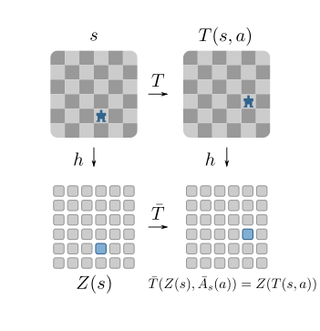
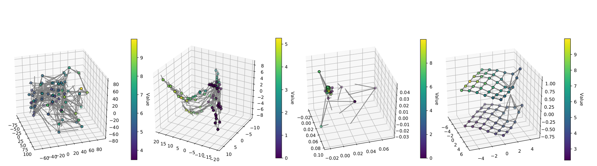

Correspondence to Elise van der Pol: e.e.vanderpol[at]uva[dot]nl · @ElisevanderPol
If you need meaningful latent representations for MDPs for e.g. planning or exploration, have a look at our AAMAS 2020 paper. We use a contrastive loss to learn MDP homomorphisms.
An MDP homomorphism is a structure-preserving map from an input MDP to an abstract MDP (the “homomorphic image”). MDP homomorphisms maintain the optimal Q-values and thus the optimal policy.
Roughly speaking, we find a smaller abstract representation of our MDP, and if the map is an MDP homomorphism, the optimal policy is guaranteed to be the same.
We prove that as the loss function reaches 0, we find an MDP homomorphism for deterministic MDPs. This is attractive because we could in theory plan in a reduced MDP and lift to the optimal policy in the original, bigger MDP!
Due to the homomorphism constraints, we learn much better structured representations (rightmost figure), which support better planning. We show empirically that the policy found in the abstract MDP performs well in the original MDP.
For more results and details, have a look at the paper.